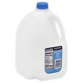

| Sweet | ||||
|---|---|---|---|---|
| Coconut or almond milk | for | Whole milk or half and half* | ||
| (*There is almond milk creamer now, too.) | ||||
|  | Skim milk | for | Whole milk | |
| Chocolate chips or M & M's | for | a full-sized candy bar* |  |
|
| (*Smaller pieces of chocolate aren’t low in calories, but they make it easier to control portion size. Sometimes a little taste is enough to satisfy a craving.) | ||||
| Halo/Enlightened ice cream | for | regular ice cream | ||
| Angel food cake | for | regular flour cake | ||
| Savory | ||||
| Mozzarella | for | Other cheeses | ||
| Open-faced sandwiches | for | closed* | ||
| (*Save on half the bread.) | ||||
| Wraps or lettuce | for | Bread | ||
| Tuna salad | for | Egg salad | ||
| Veggie burgers | for | Hamburgers | ||
| Cheese balls | for | Chips* | ||
| (*Cheese balls are also easy to count and are regular in size, unlike other chips, which are harder to put into controlled serving sizes without a scale.) | ||||
 |
Rice crisps | for | Chips* | |
| (*Rice crisps are relatively large in surface area (for increased seasoning) and you can eat quite a few in a serving compared to regular chips. They also come in sweet as well as savory flavors.) | ||||
Quite a few people do not believe in using sugar substitutes, but I have found that they help me to avoid drinking my calories for the day. There are also many pancake syrups, puddings, jams, and other foods that are dramatically reduced in calories when made with artificial sugar. The idea that sugar substitutes cause cancer comes from a study in which rats were given a diet with aspartame. These animals got cancer. But they could have gotten cancer from old age. All that is known for certain about artificial sugar substitutes in humans is that they are either so sweet that only a tiny amount is needed, or the human body cannot digest them. So they pass through the body without being absorbed.
Low-calorie foods
While no foods eaten in moderation are off-limits while on a calorie-restricted diet if you’re just looking to lose weight, it can make life a lot easier to know of some filling, low-calorie foods that can help you to stay full longer.Protein helps one to stay full, and fruit helps to satisfy those cravings for sugary treats that are so often combined with butter, oil, or dairy in baked goods or ice cream.
- Egg (80 calories)
- Oatmeal
- Tofu
- Cottage cheese
- Steamables (microwaveable pouches of vegetables like corn, broccoli, and cauliflower)
- Vegetables in general (canned, frozen or fresh)
- Raspberries (50 calories per cup)
- Any berries (about 50 calories per cup)
- Bananas
- Oranges
- Apples
- Peaches, mandarins, or pears in naturally-sweetened cups
- Baked chicken breast
- Baked chicken drumstick
- Tilapia
- Swai
- Shrimp
- Tuna
- Black coffee or unsweetened tea (0 calories!)
Here are some common foods which are a bit more processed, but have a fairly modest number of calories per serving size:
- Potstickers
- Corn dogs
- Hot dogs (with bun)
- Chicken noodle soup (Nearly every brand of chicken noodle soup is low in calories.)
- Some brands of tomato or red pepper soup (Not all brands are low in calories--especially if they are a bisque.)
- Budding turkey lunch meat
- Sashimi
- Popsicles (low sugar)
- Fudgesicles (low sugar)
Surprisingly, although protein bars and shakes are marketed as healthy, they are not low in calories. Many other foods marketed as healthy also have a relatively high amount of calories, like hummus and Naked Juice.
Be mindful of the amount of oil you use to cook foods. Just one tablespoon of olive oil has 120 calories. Sauces and dressings are also serious sources of calories. Mayonnaise has 90 calories per tablespoon. Ranch has 130 calories for every two tablespoons, and nut butter has 90 calories per tablespoon.
Be on the lookout for low-calorie foods you can order while at your favorite restaurants. For example, Starbucks’ egg white egg bites have only 170 calories. Most restaurants have healthier options. For those that don’t, you can always get a to-go box and reduce your portion size. Most chain restaurants will post the estimated number of calories for their foods on their menus and websites.